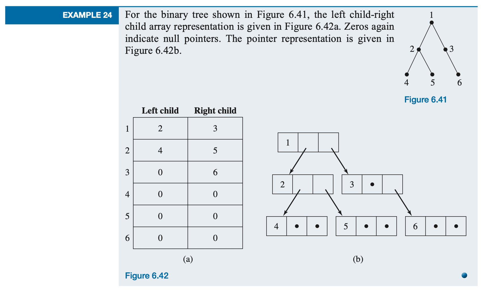
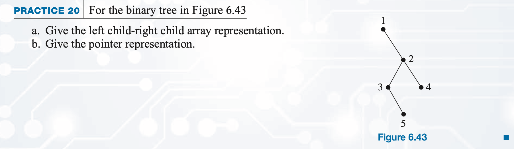

Chapter 6: Graphs and Trees
Section 6.2 Trees and Their Representations
Binary Tree Representation
Binary Tree Representation
Because a tree is also a graph, the representations discussed in Section 6.1 for graphs in general can also be used
for trees. Binary trees, however, have special characteristics that we want to capture in the representation,
namely, the identity of the left and right child. The equivalent of an adjacency matrix is a two-column array (or an
array of records) where the data values for each node are the left and right child of that node. The equivalent of
the adjacency list representation is a collection of records with three fields containing, respectively, the current
node, a pointer to the record for the left-child node, and a pointer to the record for the right-child node.

Practice

Reference
saylor academy